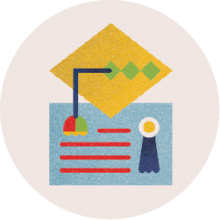
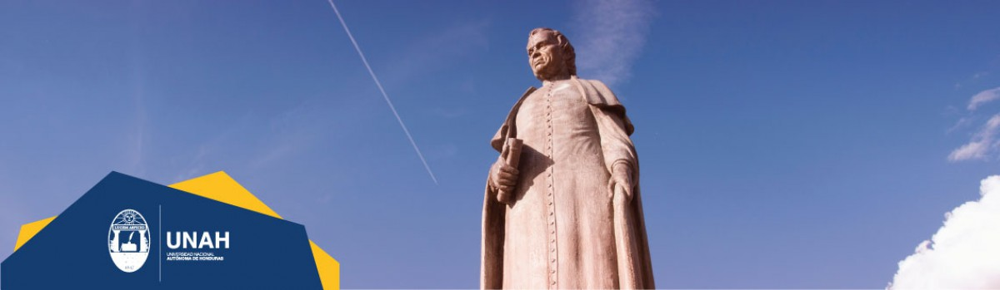
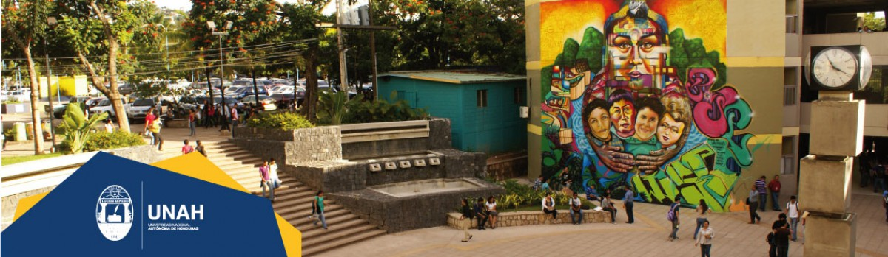

- 73 de Grado:
- 22 Técnicos Universitarios
- 51 Licenciaturas
- 68 de Posgrado:
- 1 Sub - Especialidad
- 23 Especialidades
- 42 Maestrías
- 2 Doctorados

- 2,223 a nivel de Grado:
- 63 Técnico Universitario
- 1,939 Licenciatura
- 221 Doctor en Medicina y Cirugía
- 152 a nivel de Posgrado:
- 17 Especialidad
- 81 Maestría
- 47 Especialidad en el área de la salud
- 7 Doctorado

- Observatorio Astronómico
- Centro Acuático
- Complejo Polideportivo
- Gimnasio Pedagógico
- Mariposario
- Herbario
- Jardín Botánico
- Centro de Artes y Cultura
- Clínica Odontológica
- Centro de Diagnóstico - Edificio Ciencias de la Salud
- Centro de Asistencia Psicológica
- Centro Comunitario Psicológico
- Consultorio Jurídico
- Centro de Excelencia para la Educación en Tecnologías de la Información (CEETI)
- Observatorio de la Violencia - IUDPAS
- Museo de Historia Natural
- Museo de Entomología
- Biblioteca y Hemeroteca
- Tienda y Librería Universitaria
- Editorial Universitaria

Varios jóvenes hondureños, amigos y alumnos del padre José Trinidad Reyes llamados Máximo Soto, Alejandro Flores, Miguel Antonio Rovelo, Yanuario Girón y Pedro Chirinos, decidieron fundar una sociedad de estudios, que inauguraron el 14 de diciembre de 1845 con el nombre de "Sociedad del Genio Emprendedor y del Buen Gusto", primer antecedente de la Universidad.
La Sociedad del Genio Emprendedor y del Buen Gusto, de carácter privado, recibió protección del gobierno del país, bajo el nombre de "Academia Literaria de Tegucigalpa" y dirigida por el padre Reyes. Para 1847, el Presidente Juan Lindo y el Padre José Trinidad Reyes coincidieron en la conveniencia de transformar la Academia en Universidad del Estado, razón por la cual en los meses siguientes se hicieron cambios y nombramientos para adecuar la nueva estructura académica.
Se inauguró solemnemente la Universidad en ceremonia pública encabezada por el Presidente Juan Lindo y el Rector José Trinidad Reyes, considerados justamente como fundadores de la primera casa de estudios del país. La Universidad funciono por varios años en el Convento San Francisco, situado en el actual parque Valle de Tegucigalpa.
Luego de tener su sede en el Convento San Francisco de Tegucigalpa, la Universidad pasó al edificio contiguo a la Iglesia La Merced en el año 1896, donde permaneció hasta que fue trasladada a lo que es ahora Ciudad Universitaria, cuya construcción inició el 30 de junio de 1965.
